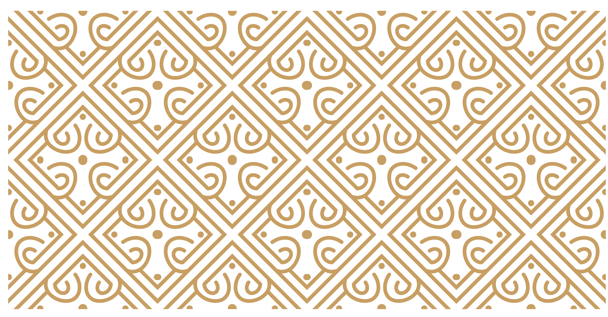
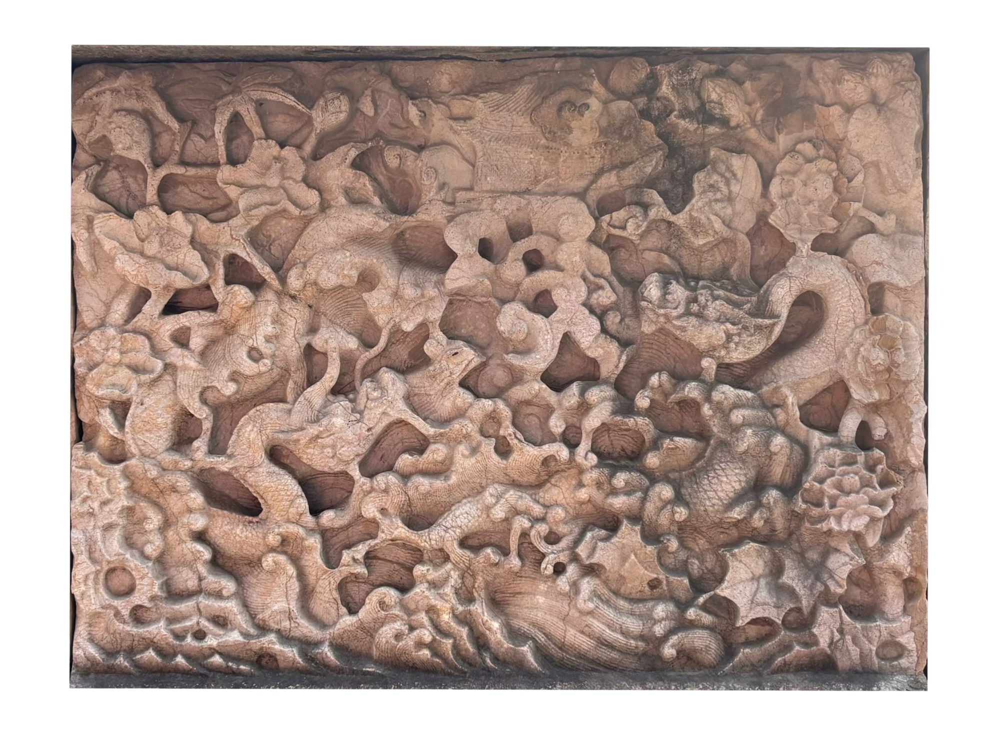
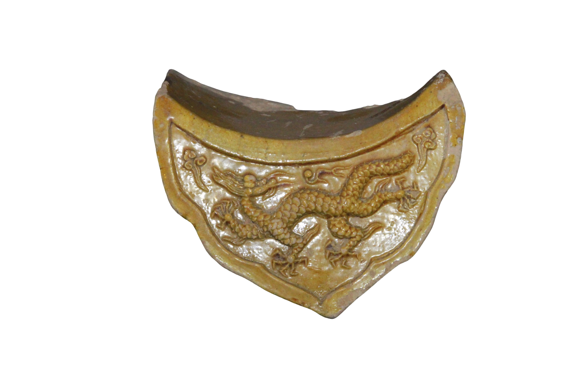
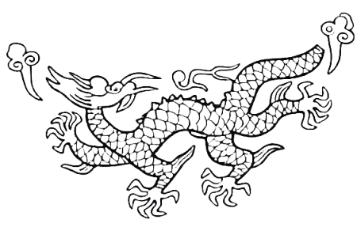
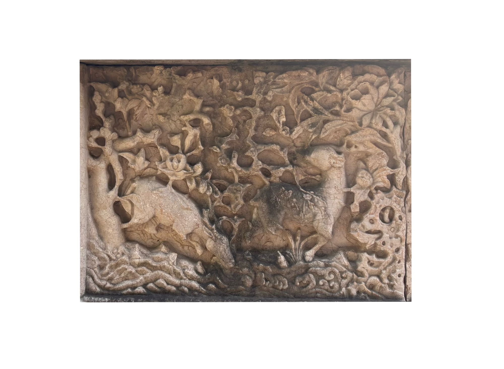
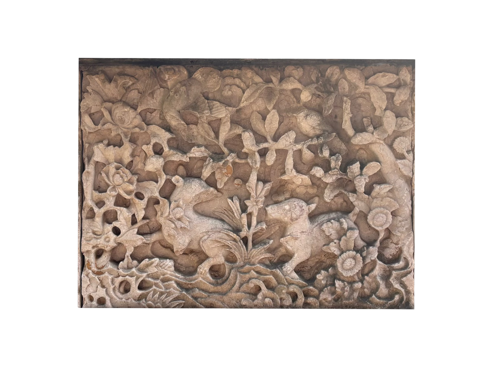
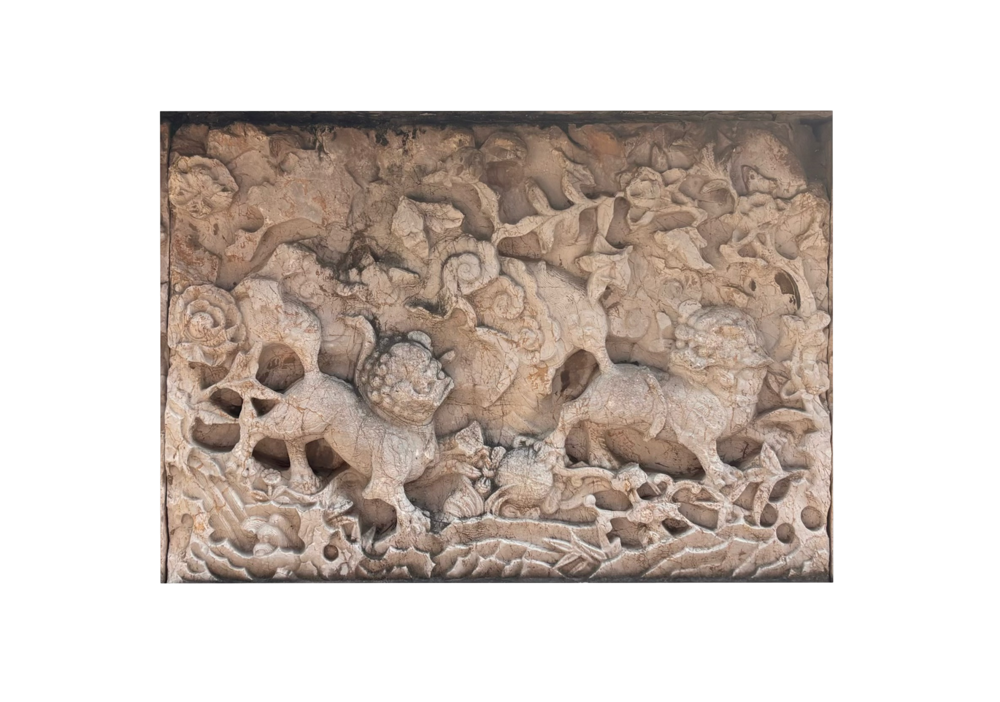
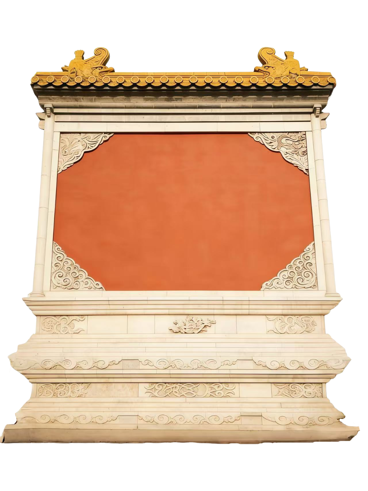

古纹藏韵
明故宫的建筑与石刻之上，遍布各类古代经典纹样。这些纹样题材丰富、工艺精湛，线条遒劲古朴、气韵雄浑，既彰显皇家威仪与礼制秩序，又承载着对王朝永固、江山万代、吉祥安康的美好祈愿，蕴含深厚的文化底蕴与明初审美气象。它们历经百年风雨依旧清晰可辨，是明代官式雕刻与建筑装饰的杰出代表，其内涵可从传统龙纹、祥瑞鸟兽、几何花卉三个维度，系统解读其造型特征、工艺技法与精神内核。

点击图片查看纹样

南京午朝门公园内的云龙纹陛石，为明故宫奉天门遗存的皇家石刻构件。陛石以深浮雕技法雕出矫健云龙，龙纹气势雄浑，五爪张扬，祥云环绕，线条刚劲流畅。作为帝王御道专用石，它严守皇家规制，尽显皇权威严。历经百余年风雨，虽略有风化，仍保存完好，是明代宫廷建筑与雕刻艺术的珍贵实物见证。



明故宫遗址午朝门公园内的双龙纹石照壁，是明初皇家云龙鸟兽石壁的核心构件。它以整块青石透雕而成，双龙翻腾于祥云间，五爪劲健、鳞甲分明，海浪纹衬底更显气势雄浑。作为明初宫廷雕刻的精品，它严守皇家规制，历经百年风雨仍细节清晰，是见证明故宫辉煌与皇权威仪的珍贵实物。


明故宫遗址出土的黄釉龙纹滴水，是明初官窑专为皇家宫殿烧制的重要建筑构件。滴水采用模印技法在陶坯上精细压印出行龙轮廓，纹饰清晰生动，线条刚劲有力，再施以纯正低温铅黄釉入窑烧制而成，虽尺寸仅十余厘米见方，却依然保持了五爪、双角、须髯俱全的皇家规制，尽显明初宫廷器物的严谨气度。

请移动鼠标使用放大镜

明故宫遗址午朝门公园的双鹿含花石刻，是明初宫廷石雕的精品代表。画面以透雕技法雕琢双鹿漫步花丛，雄鹿昂首衔枝，雌鹿依偎相伴，周身牡丹盛放、祥云缭绕，线条灵动柔美。鹿谐音 “禄”，寓意福禄绵长，既严守皇家祥瑞规制，又尽显明初工匠细腻的审美与精湛技艺，是明代吉祥寓意与雕刻艺术的完美融合。

明故宫遗址的双獾配鹊石刻，以深浮雕与透雕结合的工艺，刻画双獾嬉戏、喜鹊栖枝的祥和图景。獾体态憨态可掬，鹊羽纹清晰灵动，二者呼应成趣，暗含 “欢欢喜喜” 的吉祥寓意。作为明初皇家建筑构件，它在严谨的规制中融入世俗祥瑞意趣，既彰显宫廷气度，又传递对太平喜乐的祈愿，是明代石雕艺术的鲜活见证。

明故宫遗址的双狮戏球石刻，是明初皇家威严与祥瑞寓意的载体。工匠以高浮雕技法雕琢双狮腾跃戏球，雄狮鬃毛飞扬、爪踏绣球，雌狮顾盼呼应，狮身肌肉线条刚劲有力，气势雄浑。狮谐音 “师”，寓意 “太师少保”，既彰显皇权护卫的威严，又寄托对朝堂稳固的祈愿，是明代宫廷石雕中力量与礼制的典型表达。

几何花卉
卷草纹、石榴纹、卷云纹和方胜结带纹，是这一组装饰中最具代表性的纹样。卷草纹线条回旋舒展，富有连续生长的动感；石榴纹果实饱满，寓意繁衍昌盛；卷云纹流动翻卷，象征吉祥如意；方胜结带纹则以几何交织的形式传达福泽绵长、秩序和美的意味。这些纹样不仅具有很强的装饰性，也承载着丰富的文化寓意。类似的纹样在明初建筑中十分常见，常被运用于墙体、须弥座、砖石构件等部位，既丰富了建筑细部层次，也体现了明初装饰艺术中礼制意味与吉祥观念的统一。